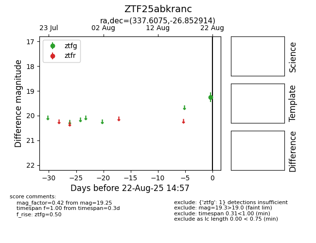

Target ZTF25abkranc at 2025-08-22 15:46, see:
FINK: fink-portal.org/ZTF25abkranc
Lasair: lasair-ztf.lsst.ac.uk/objects/ZTF25abkranc
ALeRCE: alerce.online/object/ZTF25abkranc
alt names
ZTF25abkranc (ztf,alerce)
coordinates:
equatorial (ra, dec) = (337.6075,-26.85291)
galactic (l, b) = (25.2130,-58.69158)
photometry
last ztfg=19.25
1 ztfg detections
